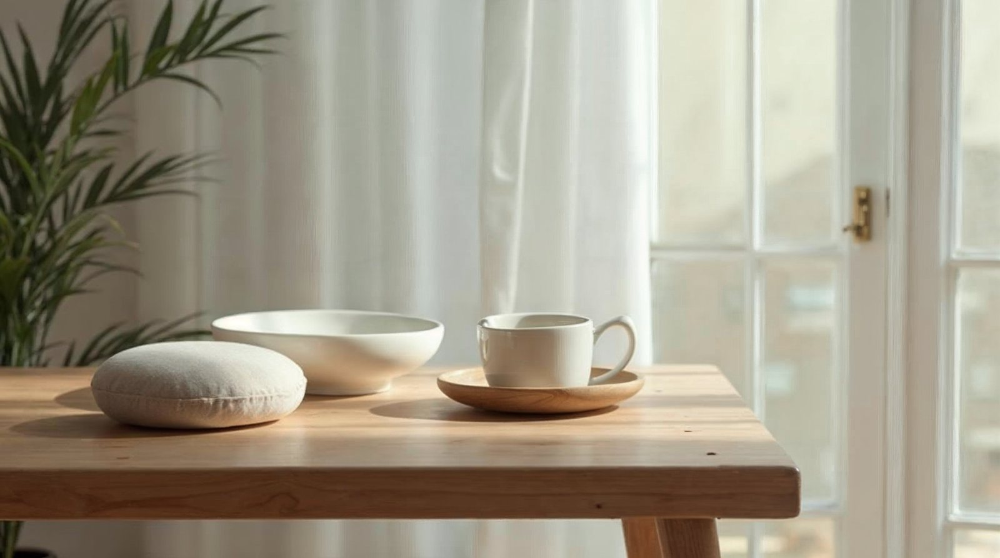
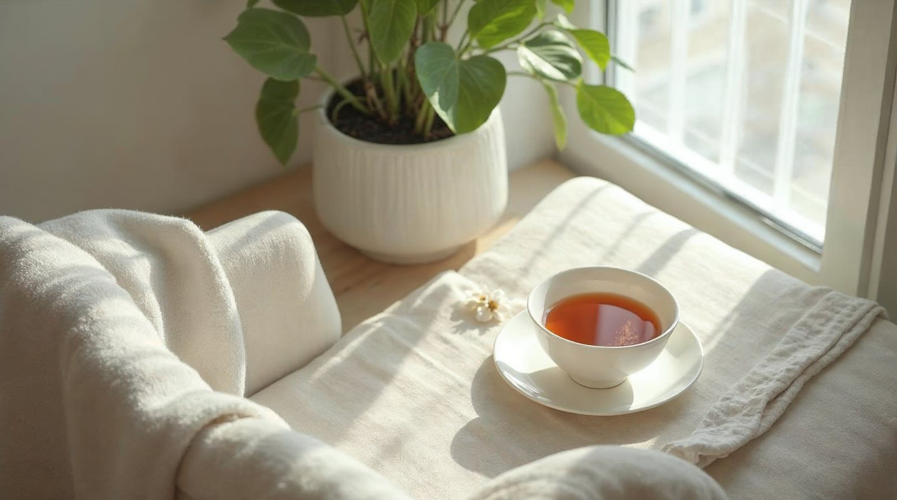
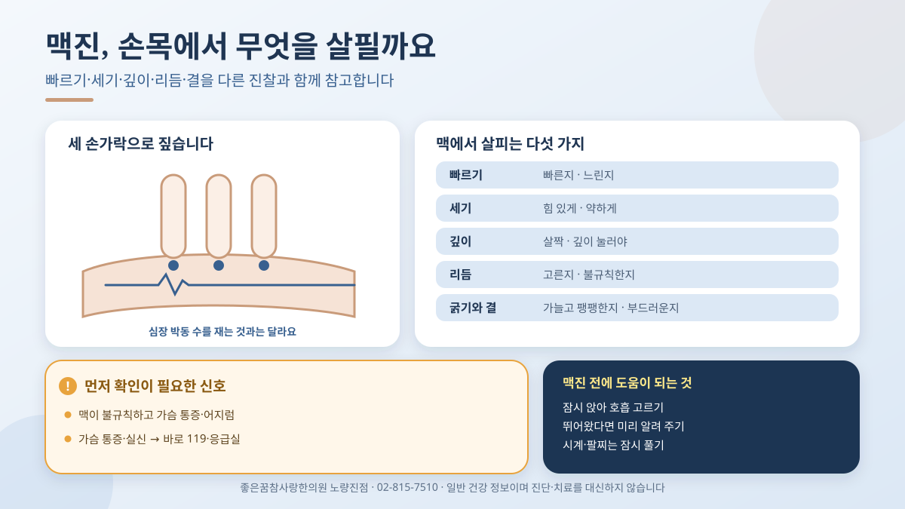

이종호 한의사 감수좋은꿈참사랑한의원 대표원장 (한의사 면허번호 19769)발행 2026-11-23 · 수정 2026-11-27
이 글의 차례
- 왜 맥을 짚나요
- 무엇을 살피나요
- 왜 같은 사람도 날마다 맥이 다르게 느껴질까요
- 먼저 이렇게 여쭙니다
- 맥박 수를 재는 것과 맥진은 무엇이 다른가요?
- 예를 들면 이런 경우입니다
- 맥에 대해 흔히 듣는 오해는 무엇일까요?
- 맥진 전에 도움이 되는 것
- 집에서 맥박을 재 볼 때는 이렇게 해 보세요
- 스스로 점검해 보세요
- 얼마나 지켜보고, 언제 상담하면 좋을까요
- 맥이 약하다거나 빠르다는 말은 어떻게 받아들이면 될까요?
- 진맥을 처음 받는 분이 자주 궁금해하시는 점은요?
- 진료실에서는 이렇게 진행됩니다
- 맥을 이어서 보면 무엇을 알 수 있나요?
- 이렇게 기록해 오시면 상담이 쉬워집니다
- 이런 증상은 먼저 확인이 필요합니다
- 함께 읽으면 좋은 글
처음 오신 분들이 진맥을 받으시면서 자주 하시는 말이 있어요. "생각보다 오래 잡고 계시네요." 그럴 만해요. 손목을 누가 이렇게 오래 쥐고 있는 일이 살면서 별로 없으니까요.
맥진은 한의사가 손목 안쪽의 맥을 세 손가락으로 짚어 빠르기와 세기, 깊이, 리듬을 살피는 진찰이에요. 그러니까 사실은 두 개가 다른 얘기예요. 심장이 1분에 몇 번 뛰는지 '세는 것'과, 손가락에 닿는 맥의 결을 '느끼는 것'은 같지 않거든요.
맥이 전하는 느낌은 잠·소화·대소변·체온·마음 같은 몸 전체의 리듬, 다른 진찰과 함께 놓고 참고해요. 맥 하나로 병명을 정하지 않고, 필요하면 다른 검사와 진료를 권해 드립니다.
왜 맥을 짚나요
- 맥은 심장 박동과 혈관 상태, 긴장과 피로에 따라 빠르기와 세기가 달라질 수 있습니다.
- 한의학에서는 맥의 깊이와 결을 몸의 기운과 상태를 살피는 단서로 봅니다.
- 같은 피로라도 맥의 모습이 다르면 생활 조언과 진료 방향을 다르게 살피는 참고가 됩니다.
- 맥은 그날의 컨디션에 따라 달라질 수 있어, 한 번보다 진료를 이어 가며 변화를 함께 봅니다.
- 잠이 부족했던 주, 소화가 무거웠던 주처럼 생활의 흐름이 맥에 함께 실려 오는 경우가 있어, 맥을 짚으며 생활 이야기를 나누는 실마리로 씁니다.

무엇을 살피나요
- 빠르기: 빠른지, 느린지
- 세기: 힘 있게 뛰는지, 약한지
- 깊이: 살짝 눌러도 느껴지는지, 깊이 눌러야 느껴지는지
- 리듬: 고른지, 불규칙한지
- 굵기와 결: 가늘고 팽팽한지, 부드러운지
- 양쪽 차이: 왼쪽과 오른쪽 손목의 느낌이 다른지
- 지난번과의 차이: 다시 오셨을 때 처음 짚었을 때와 무엇이 달라졌는지
맥의 느낌은 손목의 굵기나 혈관 위치, 그날 마신 커피, 방금 걸어온 거리 같은 조건에서도 달라질 수 있어 한 가지 소견으로 결론을 내리지 않습니다.
왜 같은 사람도 날마다 맥이 다르게 느껴질까요
맥은 그날 몸이 처한 조건을 고스란히 싣고 옵니다. 잠을 설친 다음 날, 식사 직후, 긴장되는 일을 앞둔 날에는 같은 분이라도 맥의 빠르기와 힘이 달라지는 경우가 많습니다.
날씨와 체온도 영향을 줍니다. 추운 바깥에서 막 들어와 손이 차가울 때는 손목의 혈관이 좁아져 맥이 가늘게 느껴질 수 있어, 손을 녹이고 잠시 쉰 뒤 다시 짚기도 합니다.
감기 기운이나 미열이 있을 때, 월경 주기의 앞뒤, 커피를 마신 뒤에도 맥이 달라질 수 있습니다. 혈압약이나 갑상선약처럼 맥박에 영향을 주는 약도 있어 복용 중인 약을 꼭 여쭙습니다.
그래서 저는 한 번 짚은 맥으로 몸을 판단하지 않고, 그날의 조건을 먼저 듣고 지난번과 견주어 봅니다. 맥이 다르게 느껴진 날이 있다면 그 전날의 잠과 식사를 함께 떠올려 주시면 도움이 됩니다.
먼저 이렇게 여쭙니다
- 요즘 가장 불편한 점은 무엇이고, 언제부터인가요?
- 잠은 몇 시에 들고, 자다가 깨시나요?
- 식사는 편하고, 대변과 소변은 불편하지 않으신가요?
- 손발이 차거나 얼굴에 열이 오르는 편인가요?
- 요즘 긴장하거나 마음 쓰이는 일이 많으신가요?
- 오시기 전에 뛰어오셨거나 커피를 드셨나요?
- 최근 감기 기운이나 미열이 있으셨나요?
- 스마트워치나 혈압계로 잰 맥박 기록이 있으신가요?
- 운동은 언제, 얼마나 하시나요?
맥박 수를 재는 것과 맥진은 무엇이 다른가요?
스마트워치나 혈압계가 알려 주는 맥박은 1분에 몇 번 뛰는지를 숫자로 보여 줍니다. 맥진은 그 숫자와 함께, 손가락에 닿는 맥이 얕은지 깊은지, 팽팽한지 부드러운지 같은 결을 손으로 느껴 보는 진찰입니다.
두 가지는 서로 대신하는 관계가 아니라 함께 보면 좋은 자료입니다. 집에서 잰 맥박 숫자가 있으면 가져오시고, 맥진에서 느낀 것과 나란히 놓고 이야기합니다.
스마트워치 기록에서 평소와 다른 날이 보였다면, 그날 무엇을 하고 있었는지 함께 메모해 두세요. 숫자만 있을 때보다 상황이 함께 있을 때 훨씬 이해하기 쉽습니다. 계단을 오른 직후였는지, 회의 중이었는지, 막 잠에서 깼는지 정도만 적어도 기록의 쓰임새가 크게 달라집니다.
예를 들면 이런 경우입니다
- 예를 들어 야근이 이어지며 아침마다 몸이 무겁다는 직장인이라면, 맥의 힘과 깊이를 살피면서 잠드는 시각과 저녁 식사 시간을 함께 여쭙습니다.
- 예를 들어 시험을 앞두고 가슴이 자주 두근거린다는 수험생이라면, 맥의 빠르기와 리듬을 확인하고 카페인 양과 잠, 긴장의 흐름을 같이 봅니다. 리듬이 고르지 않게 느껴지면 심전도 같은 검사를 먼저 권합니다.
- 예를 들어 혈압약을 드시면서 손발이 차다는 어르신이라면, 드시는 약과 집에서 잰 혈압 기록을 함께 놓고 맥을 살핍니다.
- 예를 들어 출산 뒤 몇 달째 밤잠을 나눠 자며 쉽게 지친다는 분이라면, 맥의 힘과 함께 수유와 잠의 패턴, 식사를 챙기는 정도를 여쭙습니다.
- 예를 들어 운동을 막 시작해 매일 저녁 달리기를 한다는 분이라면, 운동 시간과 진료 시간 사이의 간격을 확인하고 그날 맥이 빠른 이유를 함께 감안합니다.
맥에 대해 흔히 듣는 오해는 무엇일까요?
- "맥만 짚으면 모든 병을 알 수 있다": 맥은 몸을 이해하는 중요한 단서지만, 혀와 배, 말씀해 주시는 증상, 필요할 때는 다른 의료기관 검사까지 함께 봐야 합니다.
- "맥박이 느리면 건강이 나쁘다": 운동을 꾸준히 한 분은 쉬고 있을 때 맥박이 느린 경우도 있습니다. 숫자 하나보다 어지럼이나 기운 같은 몸의 느낌과 함께 봅니다.
- "맥을 오래 짚을수록 심각하다는 뜻이다": 깊이와 양쪽 차이를 차례로 확인하느라 시간이 걸리는 것이며, 오래 짚는다고 해서 문제가 있다는 뜻은 아닙니다.
- "한 번 진맥한 결과는 오래 간다": 맥은 그날의 잠과 식사, 긴장에 따라 달라지기 때문에 다시 오실 때마다 새로 짚습니다.

맥진 전에 도움이 되는 것
- 진료실에 들어와 잠시 앉아 호흡을 고르기
- 달리거나 계단을 오른 직후라면 알려 주기(맥이 빨라집니다)
- 커피, 술, 흡연 여부와 복용 중인 약 알려 주기
- 손목을 조이는 시계나 팔찌는 잠시 풀어 두기
- 손목에 상처나 깁스가 있다면 미리 말씀하기
- 소매가 손목을 꽉 조이지 않는 옷 입고 오기
- 맥을 짚는 동안에는 팔에 힘을 빼고 편하게 앉아 있기(여쭙는 말에는 편하게 답하셔도 됩니다)
집에서 맥박을 재 볼 때는 이렇게 해 보세요
- 의자에 앉아 5분쯤 쉬고 나서 재기
- 손바닥을 위로 하고, 반대 손 검지와 중지를 엄지 쪽 손목 안쪽에 가볍게 대기
- 30초 동안 센 숫자에 2를 곱하고, 한 번 더 재서 두 숫자를 함께 적기
- 아침에 일어나 화장실에 다녀온 뒤처럼 매일 비슷한 때에 재기
- 숫자와 함께 리듬이 고른지, 중간에 쉬어 가는 느낌이 있는지 한 줄로 적기
- 커피를 마신 뒤나 운동 직후에 잰 숫자는 따로 표시해 두기
숫자가 평소와 크게 다르거나 리듬이 들쭉날쭉하게 느껴졌다면 진료 때 그 기록을 그대로 보여 주세요. 맥이 한 번씩 쉬어 가는 느낌이 궁금하시다면 관련 글도 참고하세요(진맥을 받다가 맥이 고르지 않거나 한 번씩 쉬어 가는 것 같다는 말을 들었을 때는 무엇을 확인하나요?).
스스로 점검해 보세요
- 아침에 일어나도 개운하지 않은 날이 일주일에 절반 이상이다
- 식사 뒤 더부룩하거나 대변이 들쭉날쭉하다
- 손발은 찬데 얼굴이나 가슴에 열이 오르는 느낌이 있다
- 쉬고 있을 때도 가슴이 두근거리는 날이 있다
- 커피를 하루 세 잔 넘게 마신다
- 긴장하는 일이 생기면 잠과 소화가 함께 흔들린다
여러 항목에 해당하면 맥을 짚을 때 함께 말씀해 주세요. 맥과 생활 이야기를 나란히 놓고 보는 데 도움이 됩니다.

얼마나 지켜보고, 언제 상담하면 좋을까요
- 며칠 무리한 뒤 피곤한 정도라면 잠과 식사 시간을 먼저 일정하게 맞추며 1~2주 지켜볼 수 있습니다.
- 잠, 소화, 피로 같은 불편이 2~4주 넘게 이어지거나 생활 리듬을 바꿔도 비슷하다면 진료를 받아 보시길 권합니다.
맥이 약하다거나 빠르다는 말은 어떻게 받아들이면 될까요?
맥이 약하다, 가늘다, 빠르다 같은 표현은 그날 손에 느껴진 맥의 모습을 설명하는 말이지 병명이 아닙니다. 같은 표현이라도 잠이 부족한 시기인지, 식사를 거르고 있는지, 긴장이 큰 시기인지에 따라 뜻이 달라집니다.
그래서 맥에 대한 설명을 들으셨다면 "그럼 생활에서 무엇을 먼저 살피면 될까요"라고 편하게 물어봐 주세요. 저도 맥의 모습을 말씀드릴 때는 그와 이어지는 생활 단서를 함께 짚어 드리려고 합니다.
맥 이야기를 듣고 불안해지셨다면 그 마음도 그대로 말씀해 주세요. 맥은 걱정을 늘리기 위해서가 아니라 지금 몸을 함께 이해하기 위해 짚는 것입니다.
진맥을 처음 받는 분이 자주 궁금해하시는 점은요?
처음 맥을 짚을 때 생각보다 오래 손목을 잡고 있어 놀라시는 분이 있습니다. 살짝 누를 때, 조금 더 누를 때, 깊이 누를 때의 느낌을 차례로 보고 양쪽을 견주어야 해서 시간이 조금 걸립니다.
맥을 짚으면서 잠이나 식사를 여쭙는 것도 진찰의 일부입니다. 대답하시는 동안 맥이 어떻게 달라지는지도 함께 느껴 볼 수 있어, 편하게 말씀하셔도 됩니다. 긴장되시면 숨을 한두 번 길게 내쉬고 시작해도 괜찮습니다.
손이 차갑거나 땀이 많이 나도 괜찮습니다. 그런 손의 상태도 몸을 이해하는 단서가 되며, 어르신이 처음 진맥을 받으실 때 무엇을 보는지는 따로 정리해 두었습니다(어르신이 처음 진맥을 받으실 때 무엇을 보고 어떤 것을 여쭙나요?).
진료실에서는 이렇게 진행됩니다
보통 양쪽 손목을 차례로 짚어 좌우를 견주어 봅니다. 좋은꿈참사랑한의원에서는 모든 분의 맥을 먼저 짚고 불편한 점을 충분히 들은 뒤, 필요하다고 판단될 때 설진·복진으로 몸 상태를 살피고 침이나 한약 상담 등 상태에 맞는 방법을 정합니다.
첫 방문에는 모든 분의 맥을 먼저 짚고, 불편이 시작된 시기와 경위, 잠·소화·대소변·체온·마음 상태를 여쭙습니다. 이어서 필요하다고 판단되면 혀와 배를 살피고, 통증이 있다면 아픈 곳을 눌러 보거나 움직여 봅니다.
가져오신 혈압 기록이나 검사 결과지를 함께 보고, 오늘 받을 치료와 그 이유, 다음 진료까지 지켜볼 점을 설명드립니다. 다시 오시면 그날의 맥을 지난번과 비교해 치료 부위와 방법을 다시 정합니다.
담당 원장이 다른 날에도 이전 기록을 보고 이어서 진료하고, 여러 원장이 함께 진료하는 경우에도 일정 기간마다 대표원장이 다시 맥을 확인합니다.
맥을 이어서 보면 무엇을 알 수 있나요?
한 번 짚은 맥은 그날의 사진 한 장과 비슷합니다. 진료를 이어 가며 여러 번 짚으면, 잠과 식사가 달라진 주에 맥이 어떻게 함께 움직였는지 흐름이 보이기 시작합니다.
저는 다시 오신 분의 맥을 짚을 때 지난번 기록을 옆에 두고, 그사이 가장 크게 달라진 생활이 무엇이었는지 먼저 여쭙습니다. 그 이야기와 맥의 변화가 맞아떨어지는지를 보면서 치료를 이어 갈지, 방향을 바꿀지 함께 정합니다.
진료 사이에 있었던 일을 짧게 적어 오시면 흐름을 읽기가 더 쉬워집니다. 이렇게 쌓인 기록은 한약을 이어서 드실지 정할 때도 참고가 됩니다(재진 때 한의원에서는 지난번 이후 무엇을 확인하나요?).

이렇게 기록해 오시면 상담이 쉬워집니다
맥은 그날의 잠과 커피, 긴장을 고스란히 싣고 와요. 원래 그래요. 그래서 진료실에서 짚는 그 몇 분에, 며칠 동안의 기록이 더해지면 맥을 훨씬 잘 이해할 수 있거든요.
- 두근거림이 있다면 언제, 얼마나 오래, 무엇을 하다가 생기는지
- 집에서 잰 혈압·맥박 기록(있다면)
- 복용 중인 혈압약, 갑상선약 등 약 이름
- 하루 커피 양과 잠든 시간
- 최근 잠이 부족했거나 과로한 날이 있었는지
- 갑자기 맥이 빨라졌던 때가 있다면 그때 하던 일
복용 중인 약은 처방한 의사와 상의 없이 줄이거나 끊지 않습니다. 약 이름이 헷갈리시면 봉투째 가져오시거나 사진으로 찍어 오셔도 충분해요.
맥을 짚고 그 흐름을 읽는 건 제가 할게요. 대신 하나만 부탁드려요. 진료 오시는 날에는 도착해서 몇 분만 앉아 숨을 고른 뒤에 들어와 주세요. 뛰어오신 맥과 쉬고 난 맥은 다르게 느껴지거든요. 딴 건 편하게 하시면 돼요.
두근거림과 긴장이 함께 있다면 두근거림과 불안 글도 참고하세요.
맥이 약하다는 말 한마디에 괜히 마음이 쓰이실 수도 있어요. 혼자 걱정하시기보다 오셔서 같이 이야기 나누시죠. 궁금한 건 그냥 편하게 물어보세요. 맥과 생활을 나란히 놓고 차근차근 살펴보겠습니다.
이런 증상은 먼저 확인이 필요합니다
- 맥이 불규칙하게 느껴지고 어지럼, 가슴 통증이 함께 있는 경우
- 안정 시에도 맥박이 너무 빠르거나(분당 100회 이상 지속) 지나치게 느린 경우
이런 신호가 있으면 한의원보다 가까운 병원이나 응급실을 먼저 찾으세요.
함께 읽으면 좋은 글

여쭙는 것
- 요즘 가장 불편한 점은 무엇이고, 언제부터인가요?
- 잠은 몇 시에 들고, 자다가 깨시나요?
- 식사는 편하고, 대변과 소변은 불편하지 않으신가요?
먼저 확인이 필요한 신호
- 맥이 불규칙하게 느껴지고 어지럼, 가슴 통증이 함께 있는 경우
- 안정 시에도 맥박이 너무 빠르거나(분당 100회 이상 지속) 지나치게 느린 경우
자주 묻는 질문
맥을 짚으면 병명을 알 수 있나요?
맥은 참고 자료 가운데 하나이며, 병명은 여러 진찰과 검사를 함께 보고 정합니다.
양쪽 손목을 다 짚나요?
보통 양쪽을 함께 확인합니다.
다시 갈 때마다 맥을 또 짚나요?
네. 그날 몸 상태를 다시 확인하고 지난번과 비교하기 위해 맥부터 짚어 봅니다. 한약을 드시는 분은 이어 갈지 정할 때 함께 참고합니다.
혈압약을 먹고 있는데 맥진에 영향이 있나요?
약에 따라 맥의 빠르기가 달라질 수 있어 복용 중인 약을 알려 주시면 함께 감안합니다. 약은 임의로 끊지 마세요.
맥이 약하다는 말을 들으면 걱정해야 하나요?
맥의 느낌은 그날 컨디션에 따라서도 달라집니다. 한 가지로 단정하지 않고 증상과 생활, 다른 진찰을 함께 보고 설명해 드립니다.
좋은꿈참사랑한의원은 재진 때 지난번 이야기부터 이어서 여쭙니다. 진료시간과 예약은 오시는 길에서 확인하세요.
어디서 상담받을 수 있나요?
좋은꿈참사랑한의원은 서울 동작구 만양로2길 2 신성빌딩 3층·5층(서울 동작구 상도동, 7호선 상도역 3번 출구 근처)에 있습니다. 한의사 3명(이종호 대표원장, 조영기 수석진료원장, 정원영 진료원장)이 진료합니다. 진료시간은 평일 09:30~20:00(점심 13:00~14:00), 토·일·공휴일 09:30~15:00이며, 방문 전 전화로 확인을 권합니다. 예약은 네이버 예약, 카카오톡 상담, 전화 02-815-7510로 받습니다.
이 글은 일반적인 건강 정보이며 개인의 진단이나 치료를 대신하지 않습니다. 증상이 있거나 복용 중인 약이 있다면 진료를 통해 확인하세요. 치료 효과는 개인마다 다를 수 있습니다.
작성 기준: 일반적으로 알려져 있는 건강 정보를 참고해 정리했습니다(대표원장 감수). 증상 기록은 1~2주 동안 하루 1회, 비슷한 시간에 적어 오시면 지난 상태와 비교하기 쉽습니다.